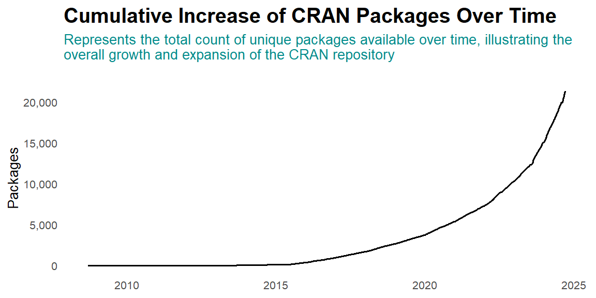

![]()
Introduction
If you’re interested in the growth of CRAN packages over time, you can analyze and visualize this using R. This post will walk you through a simple example using data from CRAN to track how the number of packages has increased over time. We’ll use the rvest package to scrape the data, dplyr for data manipulation, and ggplot2 for visualization.
Step 1: Fetching Data from CRAN
First, we need to get the data on CRAN packages. We’ll use the rvest package to scrape the information from CRAN’s webpage:
Here, we use read_html() to load the webpage and html_table() to extract the table containing package release dates.
Date | Package | Title |
|---|---|---|
2024-09-17 | astrochron | A Computational Tool for Astrochronology |
2024-09-17 | BAS | Bayesian Variable Selection and Model Averaging using Bayesian |
2024-09-17 | bWGR | Bayesian Whole-Genome Regression |
2024-09-17 | card.pro | Lightweight Modern & Responsive Card Component for 'shiny' |
2024-09-17 | CITMIC | Estimation of Cell Infiltration Based on Cell Crosstalk |
2011-09-07 | ISOweek | Week of the year and weekday according to ISO 8601 |
2011-08-18 | ieeeround | Functions to set and get the IEEE rounding mode |
2010-06-25 | RNCBIEUtilsLibs | EUtils libraries for use in the R environment |
2008-10-28 | kzs | Kolmogorov-Zurbenko Spatial Smoothing and Applications |
2008-09-08 | pack | Convert values to/from raw vectors |
Step 2: Data Manipulation
Next, we’ll manipulate the data to calculate the cumulative number of packages. We’ll use dplyr for this:
# Process the data
packages = packages |>
purrr::pluck(1) |> # Extract the first table
group_by(Date) |> # Group by Date
tally() |> # Count the number of packages released on each date
mutate(
total = cumsum(n), # Calculate cumulative total
Date = as.Date(Date) # Ensure Date column is of Date type
) |>
ungroup()The function purrr::pluck(1) is used to extract the first table from the list obtained from the HTML page. Next, group_by(Date) organizes the data by each release date, allowing us to group the packages released on the same day. We then use tally() to count the number of packages released on each of these dates. Finally, cumsum(n) calculates the cumulative total of packages, giving us a running total of the number of packages available over time.
Step 3: Visualizing the Data
Finally, we use ggplot2 to create a line plot of the cumulative number of packages over time:
packages |>
ggplot(aes(x = Date, y = total)) +
geom_path(linewidth = 0.6) +
labs(
title = "Cumulative Increase of CRAN Packages Over Time",
subtitle =str_wrap(string = "Represents the total count of unique packages available over time, illustrating the overall growth and expansion of the CRAN repository",width = 90),
x = "Date",
y = "Packages"
) +
scale_y_continuous(labels = scales::label_number(big.mark = ","))+
theme_minimal(base_size = 10)+
theme(axis.title.x = element_blank(), panel.grid = element_blank(),
plot.title = element_text(face = "bold", size = 15),
plot.subtitle = element_text(size = 10, face = "plain", color = "cyan4",
margin = margin(b = 15))) 
Conclusion
With this approach, you can easily visualize how the number of CRAN packages has grown over time. This method can be adapted for other types of time-series data and can provide valuable insights into trends and growth patterns.
Citation
@online{semba2024,
author = {Semba, Masumbuko},
title = {Tracking the {Growth} of {CRAN} {Packages}},
date = {2024-09-02},
url = {https://lugoga.github.io/kitaa/posts/summarytool/},
langid = {en}
}